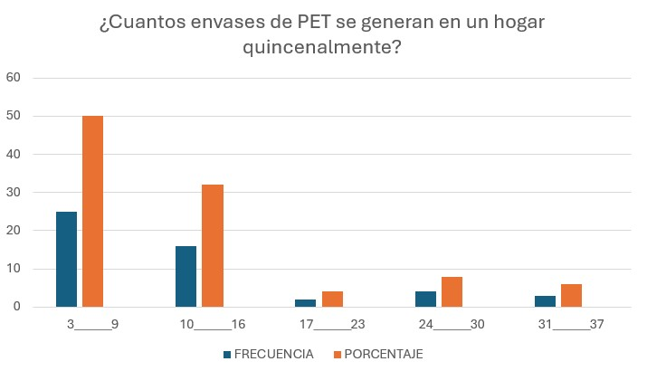
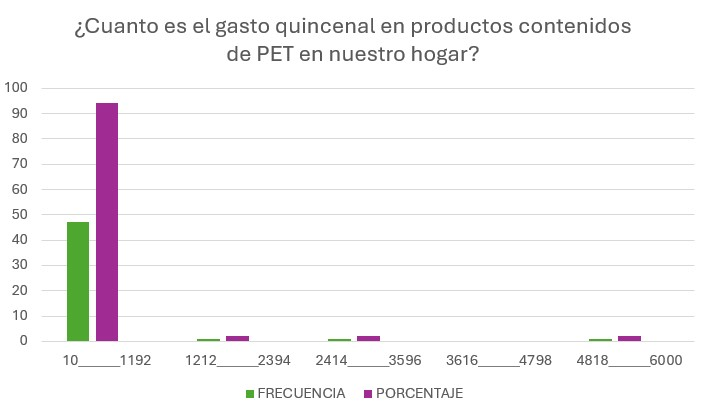
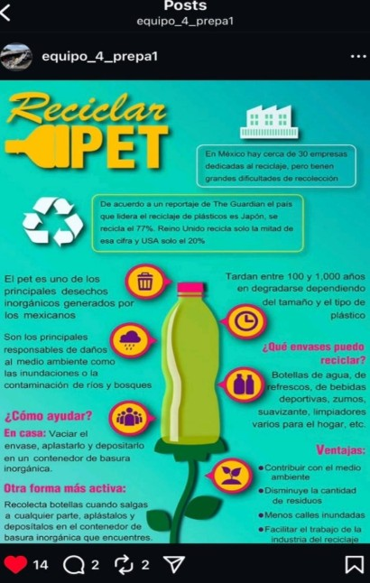
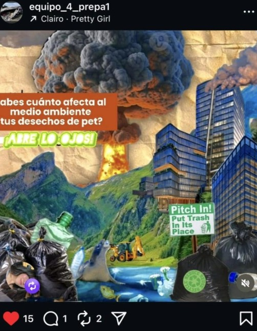
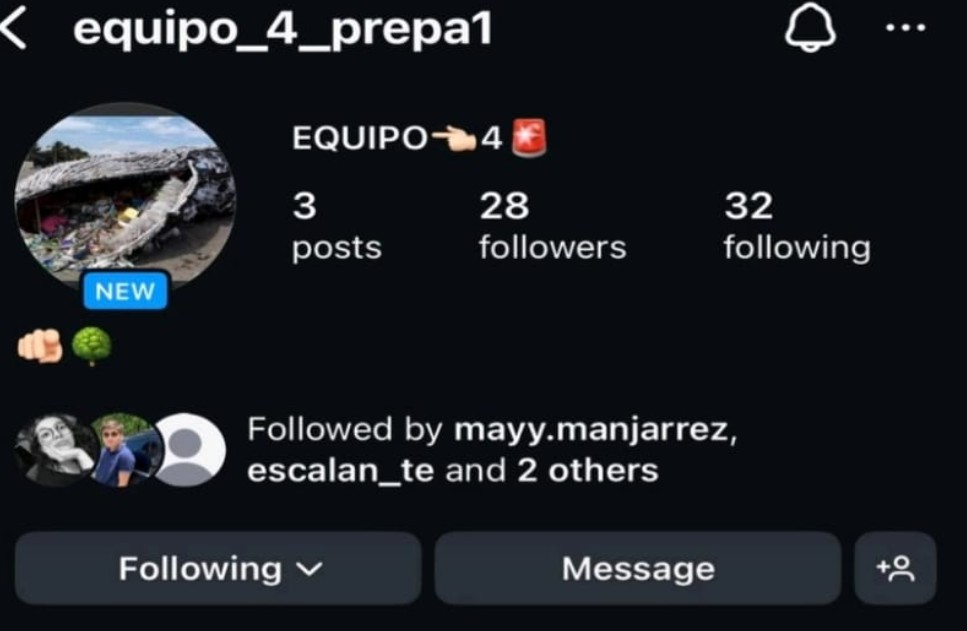

Un proyecto que apoya las iniciativas globales de la agenda 2023 en la meta numero 13 "Accion por el clima" promoviemdo la educacion ambiental y fomentando una cultura de reciclaje
La problemática del plástico de un solo uso es alarmante a nivel mundial. Cada año se producen más de 400 millones de toneladas de plástico, y menos del 10% se recicla. Se estima que entre 19 y 23 millones de toneladas de desechos plásticos terminan en lagos, ríos y mares, causando un grave impacto ambiental. Además, los microplásticos invaden nuestros alimentos, agua y aire.
El reciclaje es el proceso de reincorporación a la cadena productiva de ciertos materiales usados y desechados. En otras palabras, es el proceso de dar nuevo uso a cierto tipo de desechos, que pasan a constituir materia prima para nuevas elaboraciones. Con esto se ahorra en materiales básicos, en energia y se disminuye el impacto medioambiental de ambos productos (el nuevo y el reciclado) El reciclaje es una forma de matizar la acumulación de materiales de desecho propios de la vida industrial y sociedad de consumo. Es una de las principales formas de combatir la contaminación por acumulación de residuos físicos, que consiste en la dispersión de elementos sólidos en el entorno natural, donde su proceso de degradación se hace lento o a veces imposible, y donde su presencia además altera de manera impredecible la dinámica química y física del entorno.
Según la Secretaria de Medio Ambiente y Recursos Naturales es importante la valoración para crear una cultura de reciclaje y esta se refiere a recuperar el valor de los materiales mediante su reincorporación a los procesos productivos, por medio de un manejo integral además de eficiencia ambiental y tecnológica. Ahora para lograr esta parte es importante como primer paso la separación de nuestros residuos a fin de facilitar su aprovechamiento y de la misma manera reduciendo el espacio que ocupan en rellenos sanitaros o en tiraderos, a fin de poder alargar su vida útil, por medio del reciclaje. El reciclaje es la transformación por medio de procesos que permite restituir el valor económico, aumentando la vida útil de un material, se considera reciclaje siempre y cuando su proceso ayude ahorrando energía y materia prima.
Comenzando con la Ley general para la Prevención y Gestión Integral de los Residuos (LGPGIR). Esta ley fue publicada en el año 2003, es la base del marco regulatorio sobre los residuos de México, sus principales objetivos son. Reducir la generación de residuos, fomentar la valorización y reciclaje de materiales, regular la gestión de residuos peligrosos y de manejo especial como es el caso del plástico. Los productores de plástico deben implementar estrategias como la economía circular y fomentar el reciclaje.
Como segundo punto tomaremos en cuenta las Normas Oficiales Mexicanas (NOM) Relacionadas con el reciclaje de Plásticos, estas son regulaciones que establecen requisitos para la correcta gestión de residuos. NOM-161-SEMARNAT-2011: Regula la clasificación y manejo de residuos que necesitan un tratamiento especial como los empaques y envases de PET
El PET o tereftalato de polietileno considera botellas de bebida y agua, envases de alimentos, envases de cosméticos, fibras sintéticas (poliéster) y se debe de seguir este proceso para su reciclaje.
RECOGIDA: Los productos de PET se recogen en centros de reciclaje.
CLASIFICACIÓN: El PET se separa de plásticos no reciclables de contaminantes.
LIMPIEZA; El PET se limpia a fin de liminar etiquetas adhesivas y residuos.
TRITURACION: El PET limpio se tritura en pequeñas escamas.
PROCESAMIENTO: Los copos se funden y se transforman en pellets, que sirven como materia prima para nuevos productos.
Por último, existen iniciativas y programas de reciclaje como es el caso de la ECOCE una organización que impulsa el reciclaje de envases y paquetes en México. Que se encuentra guiado por el Plan Nacional De Manejo de Residuos de Envases de PET.
Esta alternativa es un modelo que se a propuesto como una alternativa sostenible con procesos restaurativos y regenerativos que tiene como propósito según menciona la revista de National Geographic de mantener los productos y componentes en su mayor utilidad y valor en todo momento, por medio de un retorno de los materiales al ciclo de producción, esto nos ayudara a reducir la cantidad de materia prima que se extrae de la naturaleza y por consecuencia reduce los residuos en cadena. La economía circular mantiene tres principios, el primero es eliminar los desechos y la contaminación, mantener los productos y materiales en uso y regenerar los sistemas naturales, aumentando así la vida útil de los productos que ya existen, por medio de la evidencia científica de las consecuencias de un modelo lineal se ha generado la necesidad de modificar el modelo actual de producción, distribución y consumo impulsando el interés por alternativas sustentables (algo que se puede mantener por sí mismo sin dañar al medio ambiente). Ahora bien, tomar una medida sostenible necesita primero una evaluación ambiental que identifica y evalúa los posibles impactos negativos en el ambiente, a fin de considerarse en la planeación de un proyecto y se deben de seguir los siguientes pasos: 1. Identificar y definir el proyecto que se va a llevar a cabo. 2. El estudio del medio y la línea base realizando un análisis detallado del entorno y sus condiciones ambientales 3. Evaluación de impactos analizando efectos negativos al medio ambiente y propone acciones. 4. Acciones que nos ayuden a corregir los efectos negativos 5. La obtención de las personas que se involucran en el proyecto a fin de que conozcan sobre la iniciativa y áreas de mejora. 6. Vigilancia una vez que se encuentre aprobado el proyecto para poder conocer medidas a poder implementar. Esta fue una encuesta aplicada a 50 personas de la comunidad estolar acerca de la compra, numero de integrantes en su familia, el tipo de plastico y la cantidad de dinero que fue invertida en estos productos. Con los graficos anteriones nos podemos dar cuenta que la cantidad minima de envases en un hogar es de un minimo de 3 y un maximo de 37, como una cantidad considerable, ademas en el segundo grafico se mencionan los distintos gastos en pesos genarados por el consumo de alimentos o bebidas en PET, sendo la cantidad minia 10 pesos y de acuerdo con la frecuencia podemos llegar hasta aproximadamente los 1200 pesos, ahora algo muy preocupante de esta situacion es que la mayoria de los envaces que se consumen son de refrescos y endulcolorantes, lo que puede explicar los problemas de nuestra poblacio con respecto a sobrepeso, hipertencion y diabetes. Siendo Mexico el numero 7 a nivel mundial en diabetes adulta e infantil. Datos estadisticos del Plantel
¿Cuántos envaces de PET se producen quincenalmete en tu hogar por quincena?

LI
LS
F
F%
3 9 25 50% 10 16 16 32% 17 23 2 4% 24 30 4 8% 31 37 3 6% TOTAL=50 TOTAL=100% ¿Cuánto es el gasto quincenal en productos contenidos de PET en nuestro hogar?

LI
LS
F
F%
10 1192 47 94% 1212 2394 1 2% 2414 3596 1 2% 3616 4798 0 0% 4818 6000 1 2% TOTAL=50 TOTAL=100%
Consulta mas informacion en nuestro perfil de instagram



Ir al comienzo
Erik De La Cruz Ramirez
Roxana Martinez Carrillo
Ariadna Judith Vergel Medina
Valentina Vega Manjarrez
Miguel Angel Palacios Flores